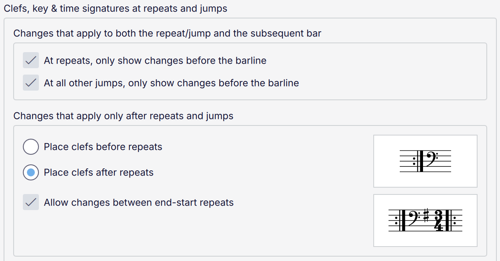
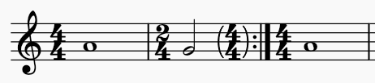
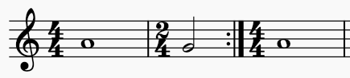
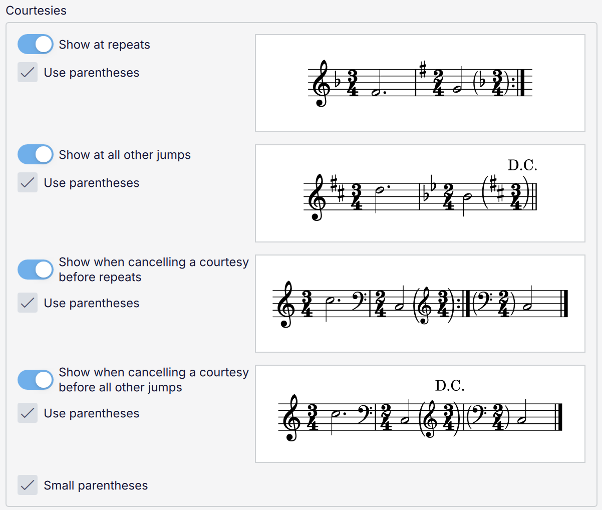

Changes and courtesies at repeats and jumps
Overview
Layout and styling of clefs, key signature and time signature changes at repeats and jumps can be a complex matter. MuseScore Studio provides a range of options to configure when and where you want them to appear. These are options are found in Style -> Format -> Clefs, key & time signatures.
Clef, key and time signature changes

Changes that apply to both the repeat/jump and the subsequent bar: sometimes a change of clef, key or time signature applies both to the destination of a jump (an end repeat barline or a 'to Coda', for example) and also when continuing on. There are two options for now to notate this:
- if the option is checked: only show the change once, before the repeat/jump
- if the option is unchecked: show the change after the repeat/jump, but allow for a courtesy change to also be shown before the repeat/jump. Whether a courtesy is actually shown or not, and whether it is parenthesised if it does, depends on the courtesy settings (see below).
You can configure this behaviour separately for repeats and for all other types of jump. These examples show illustrate a repeat:

option checked

option unchecked
If you turn off Show at repeats under Courtesies, below, the courtesy will disappear, resulting in the change only appearing after the jump:

option unchecked and courtesies disabled
Changes that apply only after repeats and jumps are for when the change only applies when continuing. However, some styles prefer to keep clefs before the barline (in their 'usual' position) even when this applies. For that reason the options Place clefs before repeats and Place clefs after repeats (the default) are provided.
Finally, Allow changes between end-start repeats will, when checked, allow an end-start repeat barline to be split into an end-repeat and start-repeat, with the changes placed between, if the changes do not apply when going back to the start of the repeat. (Clefs may still go before the end-repeat if Place clefs before repeats is selected.)
Courtesies
It is possible to display courtesies before any jump as an indication that the clef, key signature and/or time signature is different at the destination of the jump.

There are four toggles which form two pairs of options:
- Show at repeats: show cautionaries, where necessary, before a repeat barline (to indicate that the clef, key or time signature is different back the start of the repeated section)
- Show at all other jumps: show cautionaries, where necessary, before all other types of jump (e.g. D.C., D.S., To Coda, etc.)
- Show when cancelling a courtesy before repeats: if a courtesy is shown before a repeat, but it does not also apply after the repeat, show a cautionary to 'cancel' the preceding cautionary
- Show when cancelling a courtesy before all other jumps: the same as the previous option, but for all other types of jump.
Each of these toggles also has a Use parentheses checkbox which specifies whether the cautionaries should be enclosed in parentheses. Where several cautionary items appear in the same place (it is possible to have a clef, key signature and time signature all at once), a single pair of parentheses will enclose all the items.
The Small parentheses option specifies that the parentheses should be drawn to just enclose the height of the items within them (the preview images use this style). If unchecked, the parentheses will be drawn from 1sp below the staff to 1sp above.